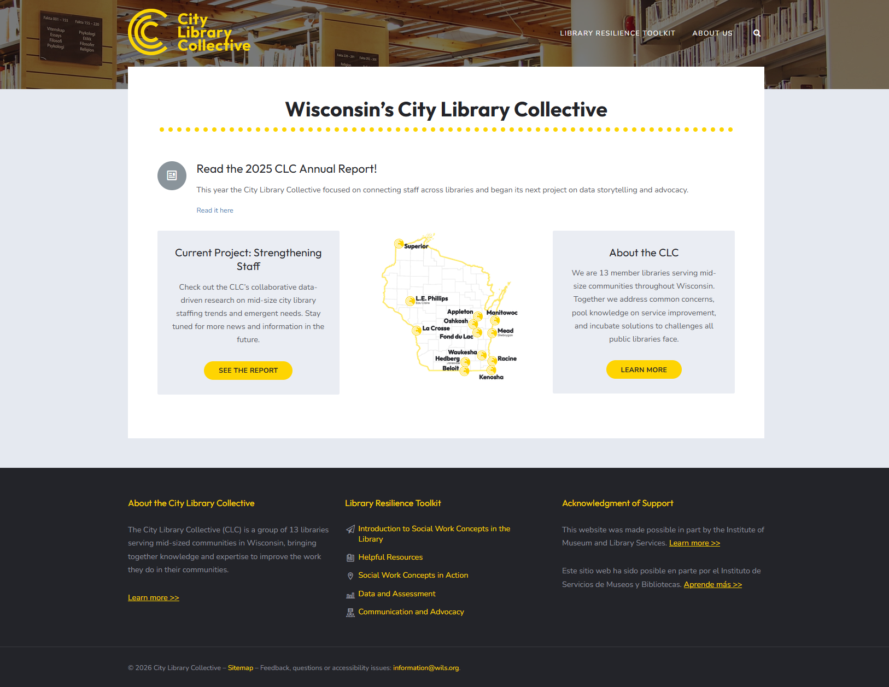
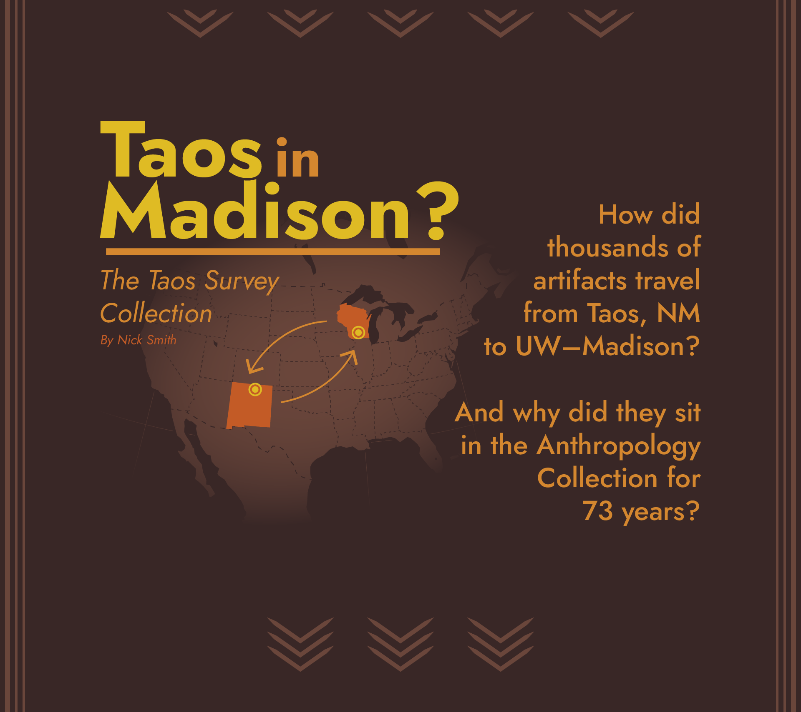
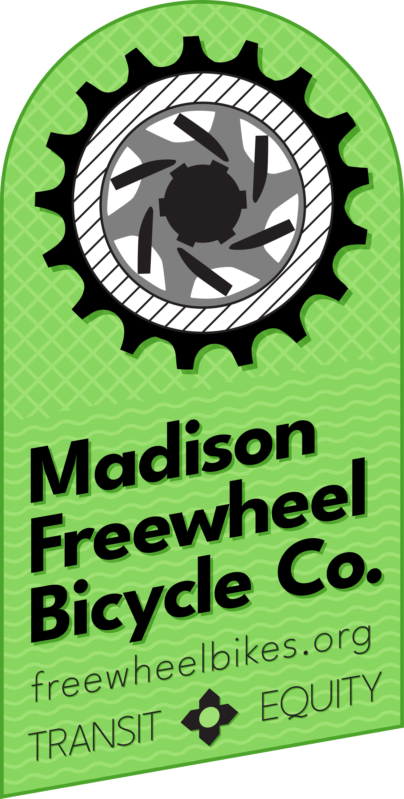
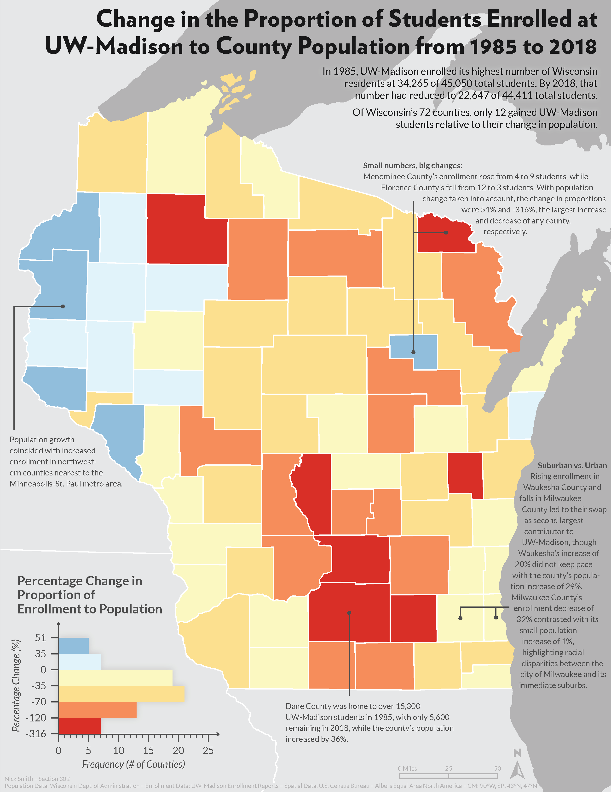
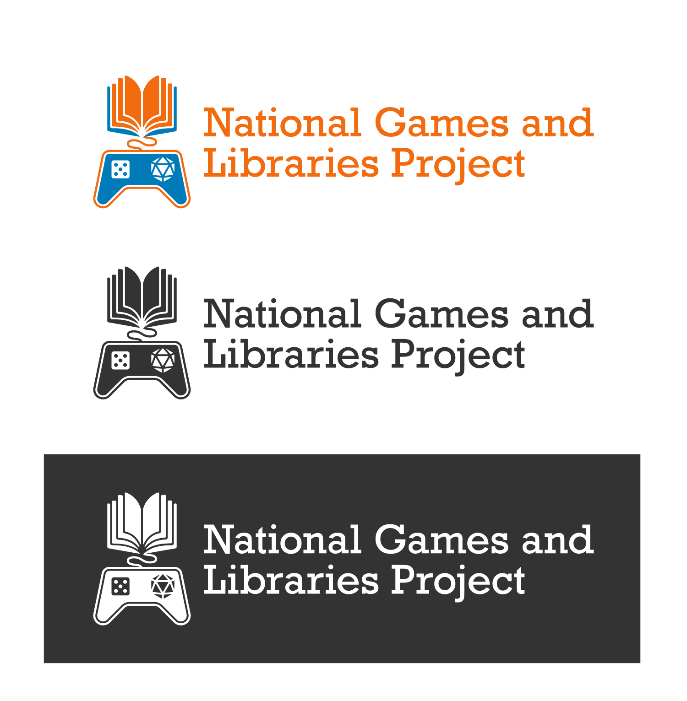

Jack of all trades:
Cartographer, Historian, Archaeologist, Designer, Spreadsheet Wrangler Extraordinaire
I'm a graduate student at the University of Minnesota studying Cartography, with work experience in libraries, volunteer experience in bicycle maintenance, freelance experience in graphic and web design, and a B.S. in Anthropology and History with a minor in Archaeology. I've done a lot, but I'm most passionate about helping build a future centered around people and our Earth.
Portfolio

Unbuckling the Salt Belt: 2020 UW Cart Lab Design Challenge
#Map #Scrollytelling
Each year, the UW Cartography Lab puts on the Design Challenge, a one-day mapping workshop centered around an annual theme. I was lucky enough to attend in 2019 and 2020, and this scrollytelling piece on road salt use is what my teammates and I created that day! See the full project.

Chemin de Fer
#Map #Web
Learning to make slippy maps in Mapbox was a time and a half, let me tell you. I wasn't entirely pleased with my Art Nouveau-inspired theme at first, but after receiving positive feedback, I'm rather proud of it. Click here to explore the map.

UW–Madison Proposed Campus Bus Routes
#Map #InTheWild #Community
I made this map for a student government committee I'm on, the Student Transportation Board, which oversees UW–Madison's campus bus program. We spent a year discussing these changes and now we're in the process of proposing them to the public! Fun fact: Wisconsin is the only state where university student governments are protected and required by law (Wisconsin State Statute 36.09(5)).

City Library Collective
#Branding #Website #WiLS #InTheWild
One of the most interesting collaboratives in Wisconsin's Libraryland is the City Library Collective (CLC). Founded in 2021 out of an ARPA grant, I joined WiLS's Consulting Team to create a website to serve as a repository for the grant's end products, a unique logo, and full brand kit with over a dozen ancillary graphics and templates for the then-fledgling collective. The CLC has since grown from 11 to 13 members, and continues strong to this day. The librarians in this group are an incredible bunch, and it was an honor to work with them.
{kind=link}

Archaeological Sites of the Americas
#Map #Archaeology
I completed this map for my final project in Intro to Cartography at UW–Madison. I wanted to blend my love of archaeology with that of cartography to digitize a wall map in the Anthropology Department while keeping its distinctive style.

Farm, Society, Assimilation
#Map #Justice #Wisconsin
This map was a part of my history capstone paper on the same topic, that of the Indian Farm Institutes that were run by UW–Extension's predecessor and their ideological parallels with the Society of American Indians. The IFIs were, though not explicitly planned this way, a part of the larger assimilationist machine run by white socity for centuries. The bulk of the technicality of this map was figuring out how to represent the uncertainty in much of the data.

ACS and CANES Dept. Stickers
#Sticker #Community #InTheWild
These stickers I made at work were an absolute treat to work on. The gorgon is by far my favorite, and all of these may still be available from the ACS and CANES departments (if you know where to find them!)

A New Look: Centralized, Dynamic Counties in Wisconsin
#Map #Wisconsin
I made this map in the summer of 2019, inspired by Clare Trainor's map and the subsequent New York Times article. Simply put, with under 6 million residents, Wisconsin doesn't need 72 separate counties. This map got my ideas on the matter out into the world.

Bornholms Museum
#Logo #AlmostInTheWild
When I went to an archaology field school in summer 2019, I casually mentioned to my instructors that I do some freelance design on occasion, so they had me redesign the museum's logo in my end report. To the best of my knowledge, they haven't acted on it (and it could use some work yet), but I greatly enjoyed designing this. (Shoutout to everyone at Bornholms Museum for being awesome folks!)

Montagne
#Gif #PixelArt
I made this gif for an animation project in an Intro to Digital Design class. While I had modicum of experience in graphic design for a couple years earlier, this class is what really got me into it!

Taos in Madison: The Taos Survey Collection
#Scrollytelling #Archaeology
In the fateful spring of 2020, I did an internship at the UW–Madison Anthropology Collection cataloging artifacts for their return to New Mexico, and at the end was tasked with creating a virtual display. My solution to this assignment was to put my scrollytelling skills from cartography classes to good use, and explain the story of how the Taos Survey Collection sat in the archives for over 70 years. See the full project.

Madison Freewheel Bicycle Co.
#Sticker #Freewheel #Community #InTheWild
One of my greatest pleasures while living in Madison was to serve on the board of Madison Freewheel Bicycle Co. It's a scrappy, DIY community bike shop that teaches folks how to fix their own bikes—absolutely for free. There's truly nothing that can replace having a genuine community bike shop in your city, I promise. I still help out a little from afar, but while I volunteered there, I designed this lovely little sticker, as well as an accompanying banner for when we ran a booth around town. I also did website and social media work there, and helped run the shop. Fixing bikes is easier than you think, let me know if you need a hand!
{kind=link}

Change in the Proportion of Students Enrolled at UW–Madison to County Population from 1985 to 2018
#Map #Wisconsin
That was a mouthful. This map shows what areas of Wisconsin have seen a relative increase in students enrolled at UW–Madison, even with the loss of over 12,000 in-state students from 1985-2018.

I'm here, I'm Queer, my back pain is moderate to severe
#Graphic #Queer #Community
My very good friend said this once and I never got it out of my head, so here we are.

Archaeological Sites of Bornholm
#Map #UnderConstruction
This map was inspired by the archaeological field school I attended on Bornholm—some of my fondest memories were created there. This map in particular describes 3 perfect days on Bornholm. It is also under construction! I have to make an arduous trek into Photoshop to correct some contrast issues, make it more colorblind friendly, and make it seem less plasticky in general. Once I do, the original will be archived for view here to show the process.
AnthroCircle
#Logo #Community #InTheWild
The logo I created for AnthroCircle, UW–Madison's anthropology student organization. This logo used colors and took inspiration from the org's previous logo.

Population Density of Districts of England and Wales
#Map #FixWikiMaps
I made this map mostly out of spite and also as part of the Fix Wiki Maps Project—the original version on Wikipedia was rather rough, so I took it on myself to fix it at least a little bit, and here's the result.

Ends and Beginnings: 2019 Madison Mayoral Election
#Map #Wisconsin #Community
In Intro to Cartography, the proportional symbol map was assigned just after our historic mayoral election, where the first openly queer woman was elected mayor of Madison. Naturally, I had to make a map about it.

National Games and Libraries Project
#Logo #WiLS #InTheWild
While at WiLS, I had the distinct pleasure to design a logo for this super cool collaboration that WiLS was managing between the Wisconsin State Library Agency and the Washington State Library. We all knew that having more games, game programming, and game innovation at libraries improves communities, but there was no imperical research about it, and that's what this project is solving. It was an interesting brief to combine the idea of the library with multiple different kinds of gaming while keeping the design uncluttered. Honestly, I'm very proud of this and I can't wait to see what the research turns up! The federal funding for this project was very nearly cut in 2025, and I'm glad it wasn't.

Northern Polaris in the Mid-Century
#Map #NationStates #Community
This is one of my favorite maps that I've done. It's for the worldbuilding project I help lead in an online community, and I just adore the design—the typeface, color choice, linework, and the little dark page crease make it feel so engrossing.
Pencil » d20 » Adventure
#Graphic #Icons
This was the second project I did learning Illustrator, again in that Intro to Digital Design class. My TA complemented this a lot and for that motivation I'm thankful.

Rådhustårnet
#Graphic #NationStates
Back at it again with Rådhustårnet, the tower of Keiserholde's city hall. There's a whole building attached to it as well, but we'll get to that later. This was heavily inspired by Stockholms Stadshus, Oslo Rådhus, and the Pražský orloj (Prague Astronomical Clock).

A One-Page Travel Guide to Fujai
#Graphic #NationStates
Back at it again with a full one-page travel guide to a fictional country. I was extremely pleased with how this turned out, and it's one of my favorite designs to this day.

The Wassailing Pacific Community Calendar
#Graphic #NationStates #Community
I'm very pleased with the way this turned out—it's the community calendar for the winter celebrations, whose planning I led, of an online community I'm a member of.

Hot Reads for Cold Nights
#Logo #Community #InTheWild
I made this logo for the La Crosse County Public Library's winter 2019 reading program. It appears on promotional materials and merchandise (yes I got one of the mugs).